Ford Aurora
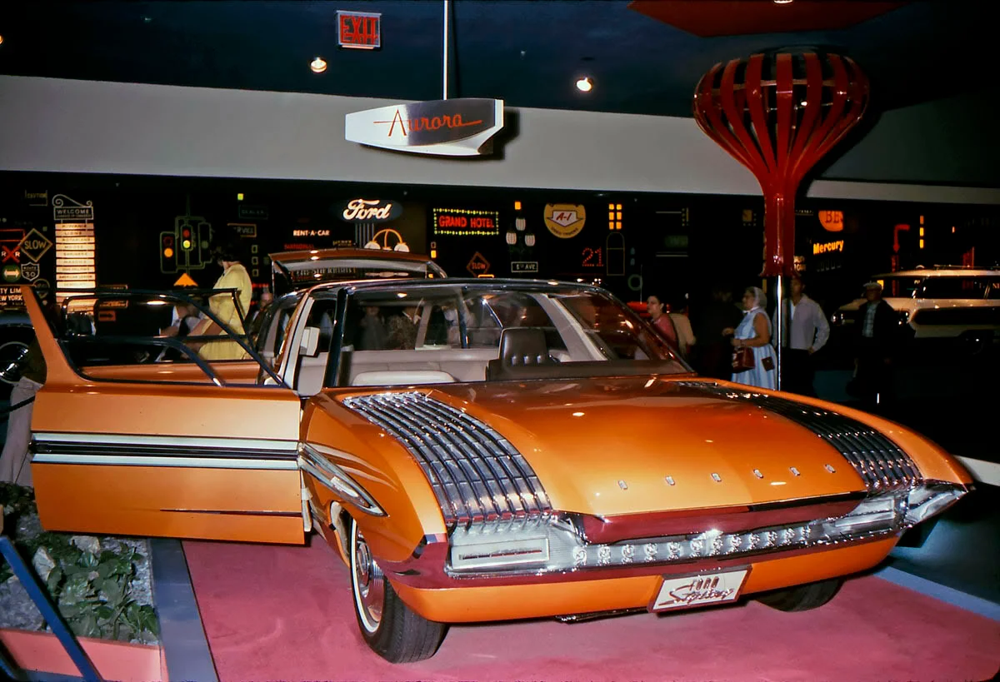
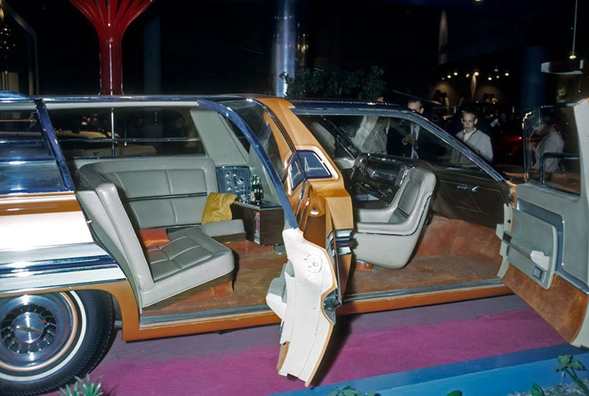
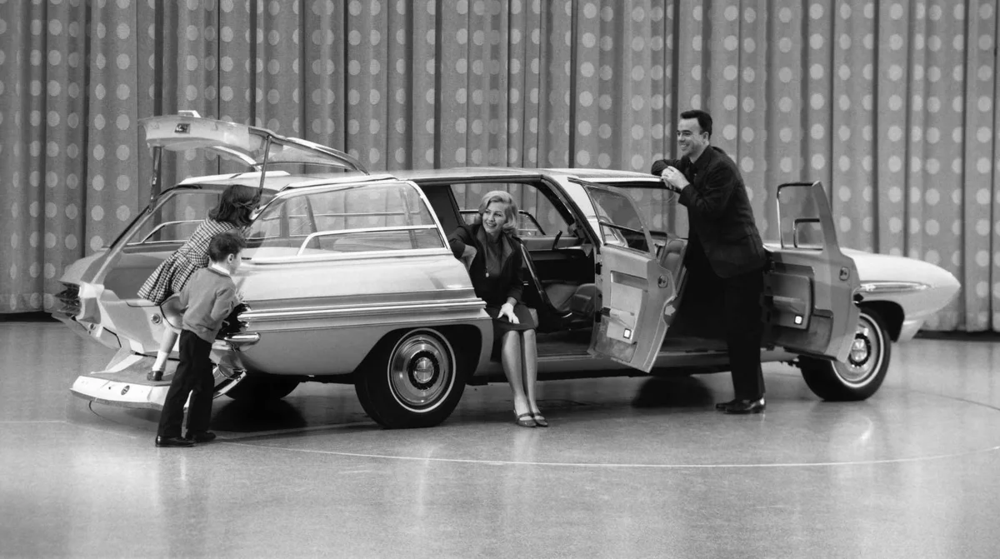
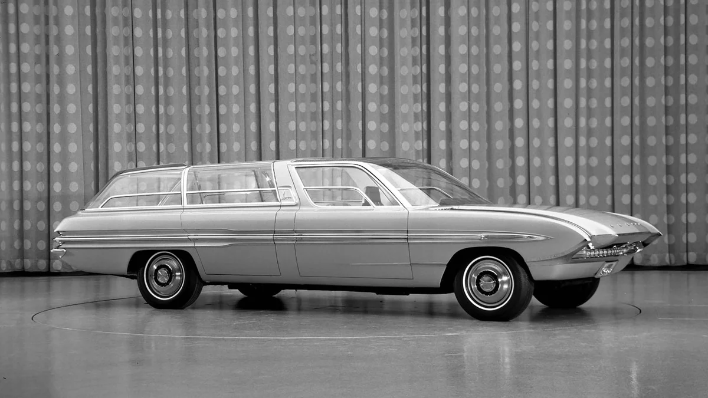
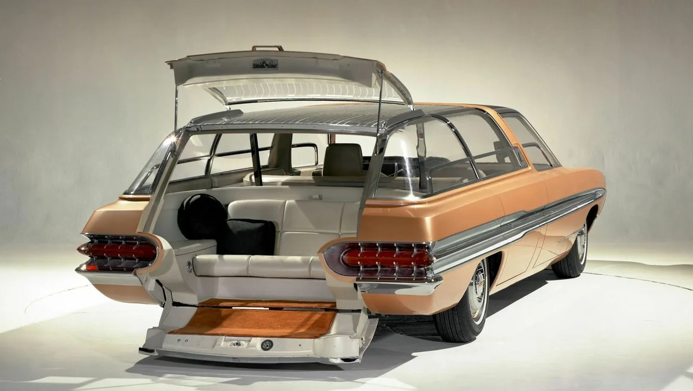
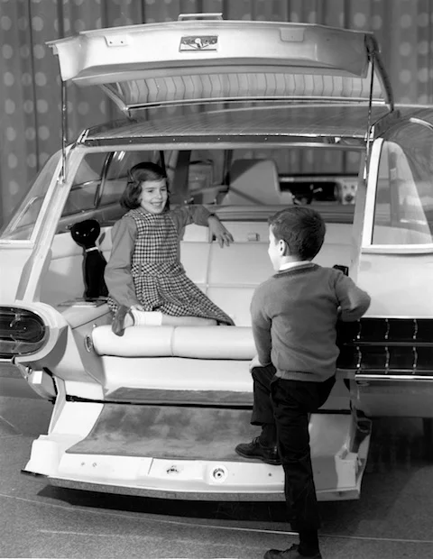
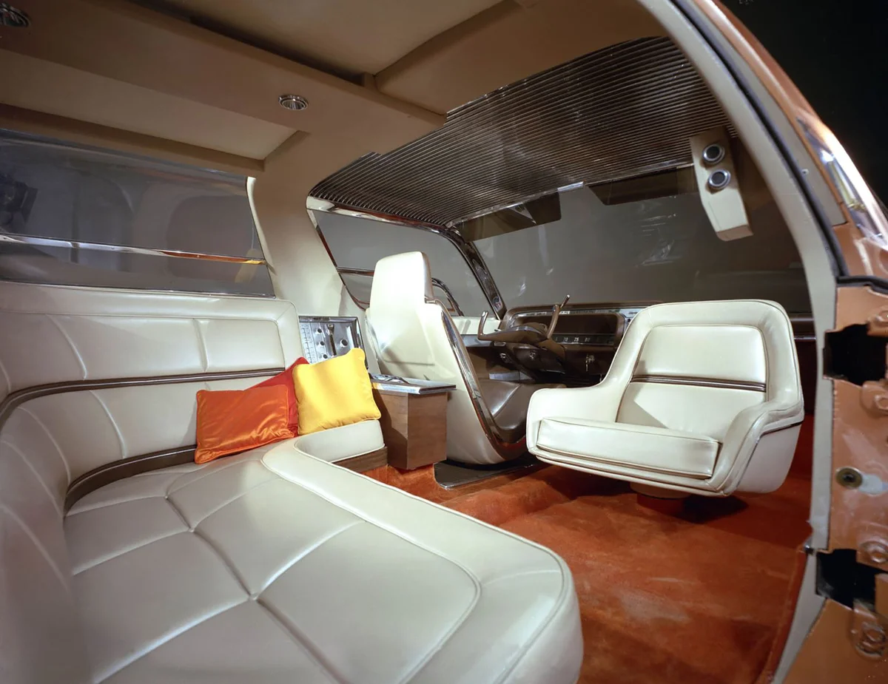
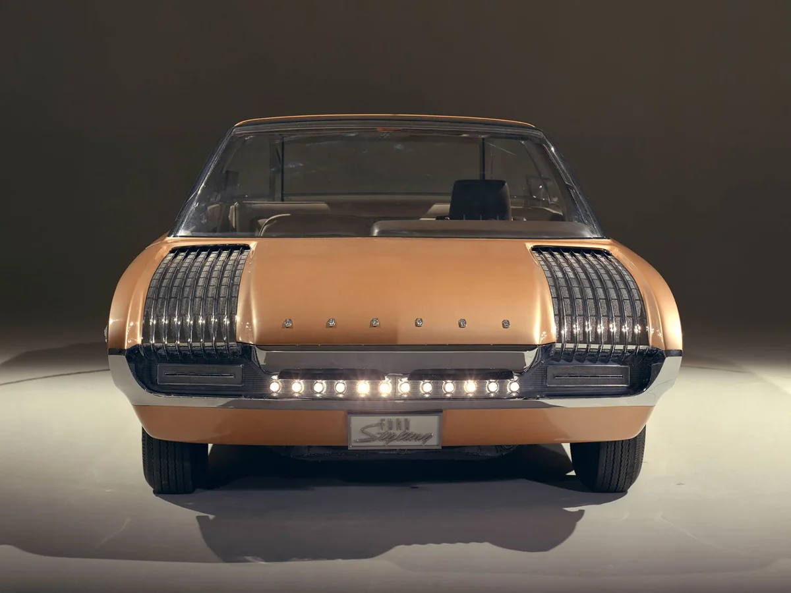
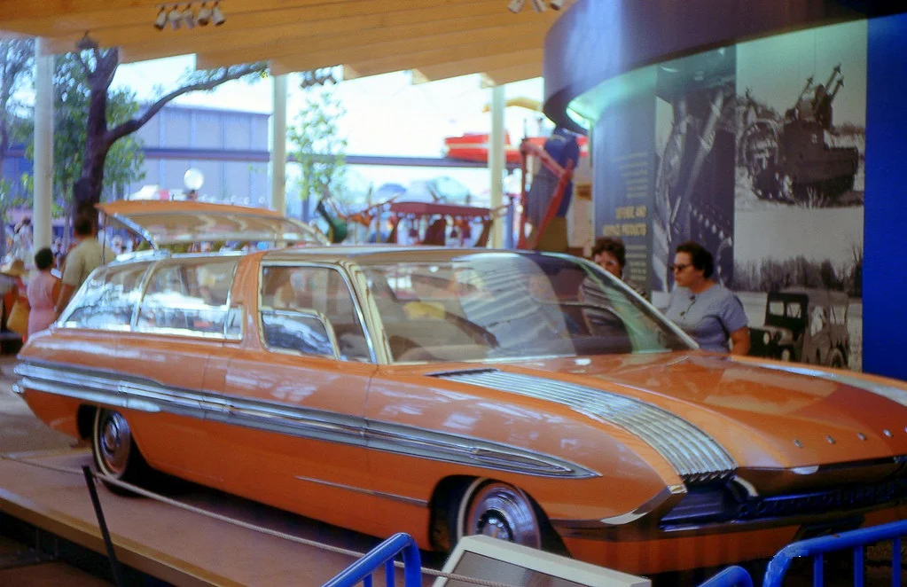
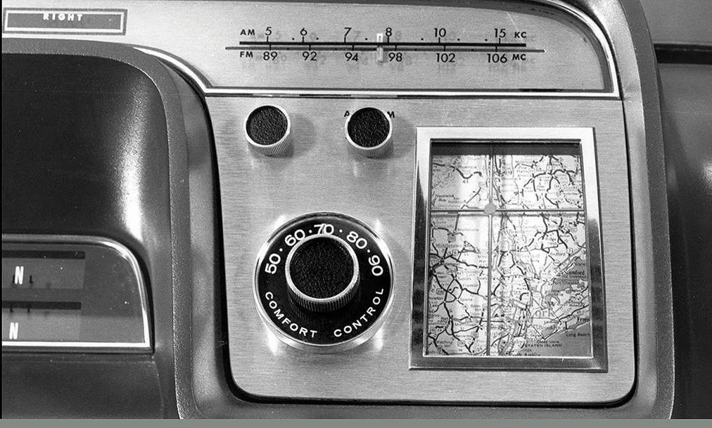
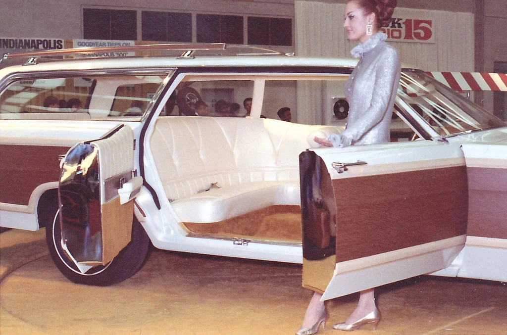
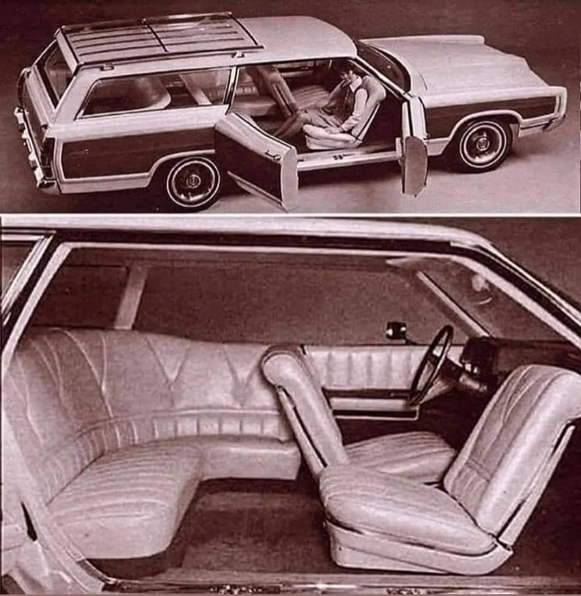
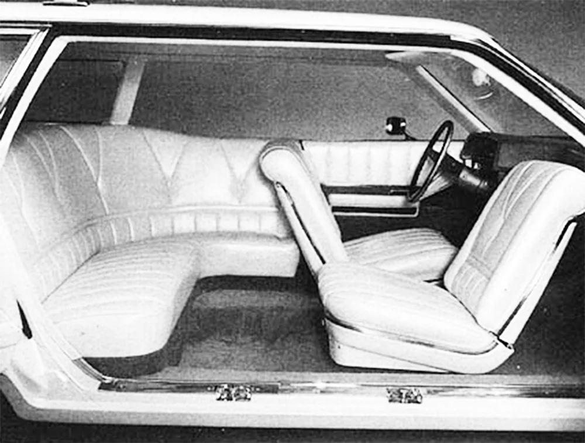
В 60-е годы в Америке выпускалось много автомобилей. То же самое касалось и концептов. Производители экспериментировали, стараясь повысить уровень комфорта и создать что-то необычное. Именно тогда были созданы два нетипичных концепта Ford Aurora I и Aurora II. За основу был взят Ford Country Squire тех годов выпуска.
В 1964 году на выставке в Нью-Йорке компания Ford представила концепт Ford Aurora (позже получивший обозначение Aurora I). Хотя в нем и прослеживались общие черты Country Squire, во многих отношениях это был единственный в своем роде автомобиль. Кузов модернизировали, но внешне он остался вполне классическим, за исключением стеклянной крыши и больших боковых окон. Интерьер был тем, что выделяло эту машину больше всего.
Вместо обычных сидений внутри было одно водительское, рядом - вращающееся пассажирское сиденье, а за ними - Г-образный диван. Просторный салон должен был повысить комфорт при движении и создать атмосферу дома на колесах. В те времена ремни безопасности не были стандартом и не требовались. Таким образом, пассажиры могли свободно перемещаться по салону. Еще одним нововведением стала система навигации водителя, основанная на традиционной карте, которая перемещалась по маршруту. Никакой GPS-навигации и в помине не было.
Как и положено концептуальному автомобилю, Ford Aurora не был запущен в производство, но некоторые детали его конструкции были использованы в шестом поколении Ford Country Squire, который начали выпускать в 65-м. Однако в 1969 году Ford решил вернуться к концепту Aurora. Так был представлен еще один концепт Ford Aurora II.
На этот раз кузов сохранил форму серийных автомобилей. Интерьер был переработан, присутствовал большой L-образным диван и поворотное пассажирское сидение рядом с водителем. Еще одно сидение поместили в багажник, чтобы было удобнее садиться и выходить, убрали стойку между передней и задней дверями, первая открывалась обычно, а вторая открывалась против движения.
Как и в случае с первой моделью, на этот раз новаторская внутренняя компоновка не была задействована в серийных авто. Одна из причин - растущее осознание безопасности дорожного движения. Аврора I и II отнюдь не были безопасными автомобилями. Никаких ремней безопасности, поворотное пассажирское сиденье, повернутое, а также большой диван и пустое пространство сзади. Все это означало, что в случае столкновения пассажиры "летали" бы по салону. Таким образом, история обоих автомобилей подошла к концу - а история серийного Ford Country Squire закончилась только в 1991 году.